搜索解答
目前已完成到 2.5
如何：运行题解代码
上次更新：2019-03-01
本文将介绍如何下载题解项目并运行代码。
在开始之前，请确保你的电脑上已经安装了 Visual Studio 2015（及以上版本）并启用了 .NET Framework 4.7。
下载 Visual Studio：https://visualstudio.microsoft.com/zh-hans/downloads/
下载全部代码
1. 点击这个链接，下载 GitHub Extension 并安装。
2. 点击本页底部的 GitHub 图标，进入题解源代码页。
3. 点击右上角的「Clone or Download」，选择「Open in Visual Studio」。
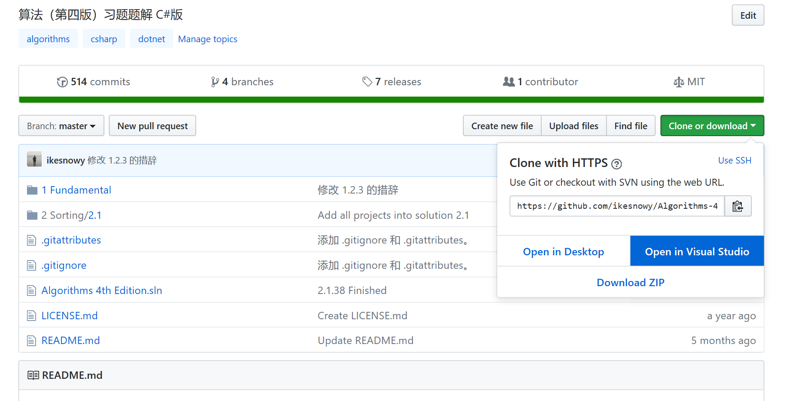
4. 随后 Visual Studio 会自动打开（如果提示是否允许切换应用，请选择允许）。
确保「以递归方式克隆子模块」被选中，点击「克隆」。
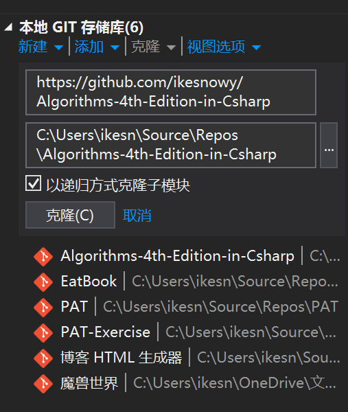
5. 耐心等待克隆完毕，视网络情况，可能需要几分钟到十几分钟不等。
6. 在解决方案资源管理器中，双击解决方案「Algorithms 4th Edition.sln」。
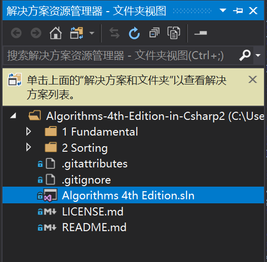
7. 右键需要运行的项目，选择「设为启动项目」。
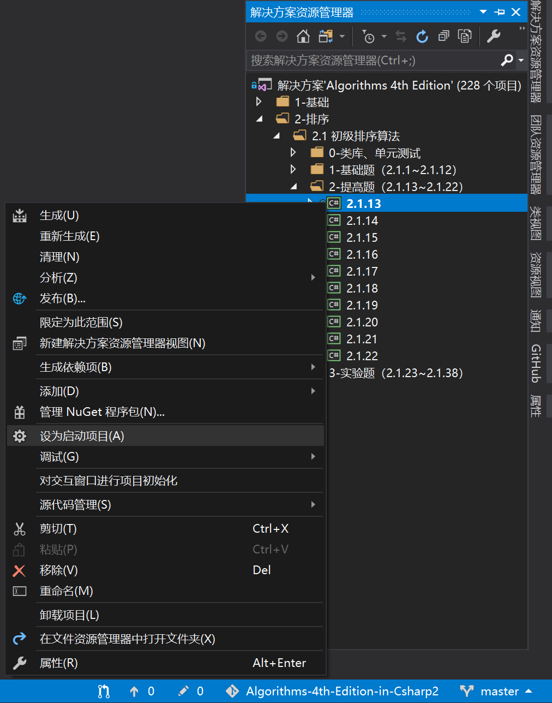
8. 按快捷键「Ctrl」+「F5」运行代码。
下载部分代码
控制台应用程序
1. 打开 Visual Studio，选择「文件」-「新建」-「项目」，或按「Ctrl」+「Shift」+「N」打开「新建项目」对话框。
2. 在模板中选择「Visual C#」-「Windows 桌面」-「控制台应用」，输入项目名称和位置，点击「确定」。
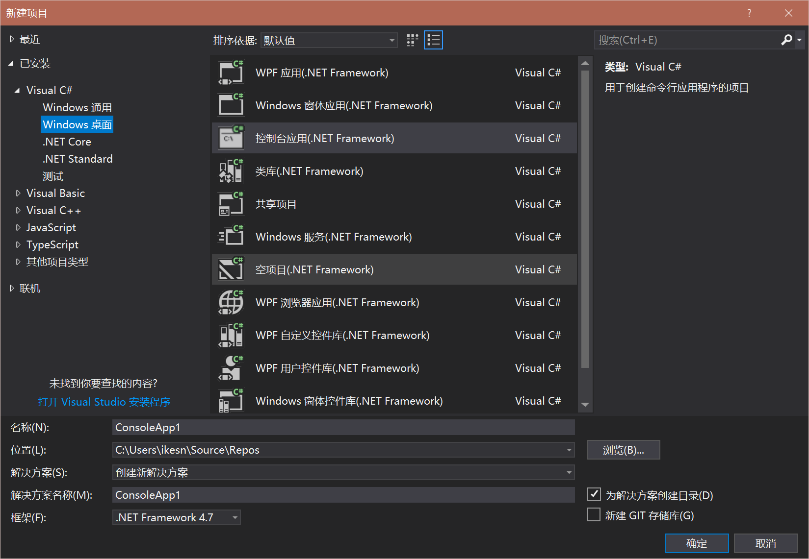
3. 这里以题 1.3.26 为例，点击本页底部的 GitHub 图标，进入题解源代码页。
4. 依次选择文件夹「1-Fundamental」-「1.3」-「1.3.26」，找到所有后缀为 .cs 的文件。
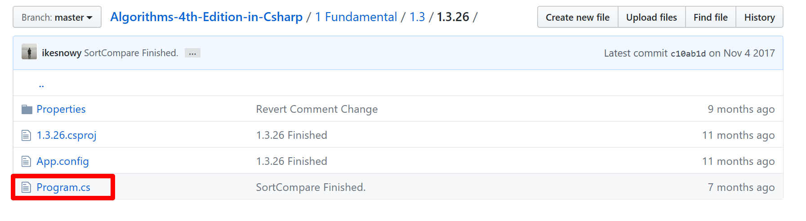
5. 点击「Program.cs」，随后右键点击「Raw」，选择「目标另存为」，下载代码文件。
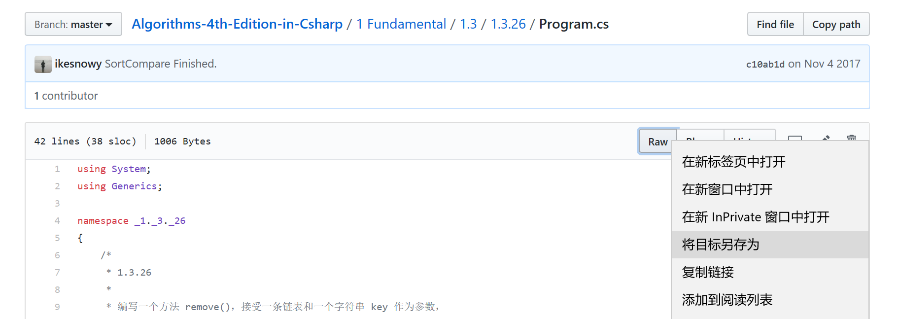
6. 依次对所有其他的 .cs 文件做相同操作，下载全部的代码文件。
7. 在解决方案资源管理器中，右键点击项目名称（一般位于解决方案名称的下方），选择「在文件资源管理器中打开文件夹」。
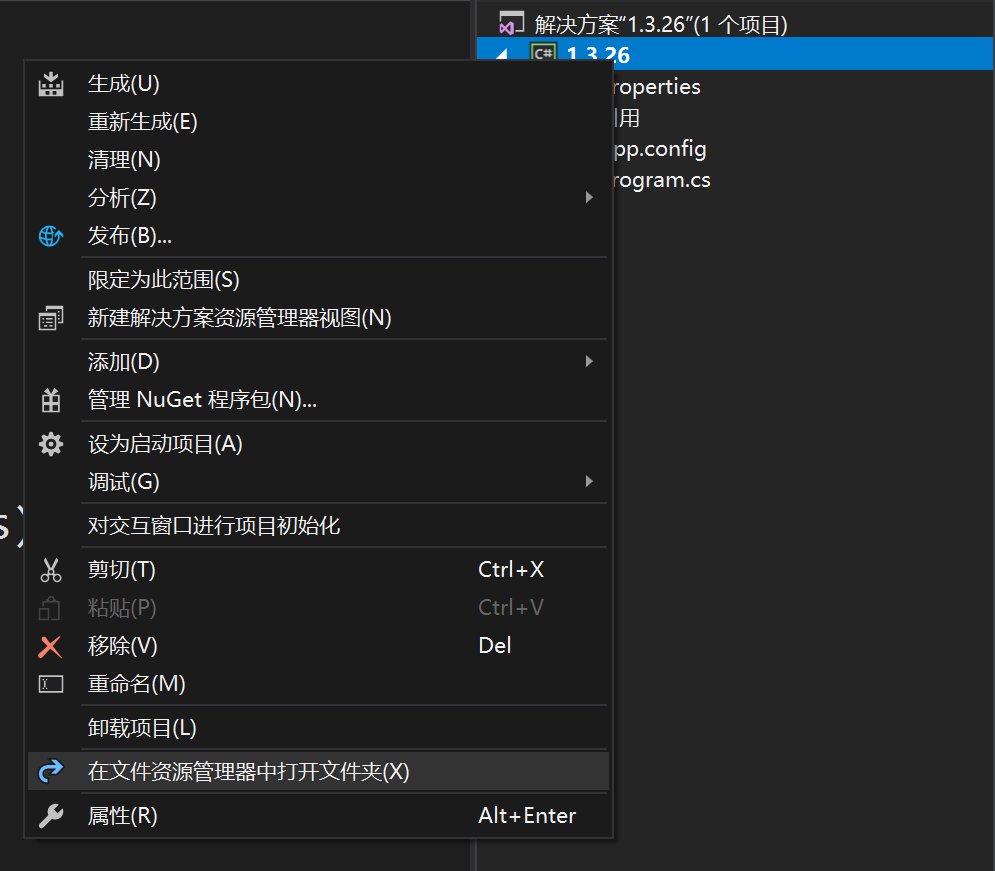
8. 将所有的代码文件复制到该目录下，如果存在重复则直接覆盖。
9. 这时 Visual Studio 可能会提示文件被更改，选择「重新加载」即可。
10. 再次右击项目名称，选择「添加」-「现有项」，或按快捷键「Shift」+「Alt」+「A」，在弹出的窗口中选择刚才复制的所有 .cs 文件。
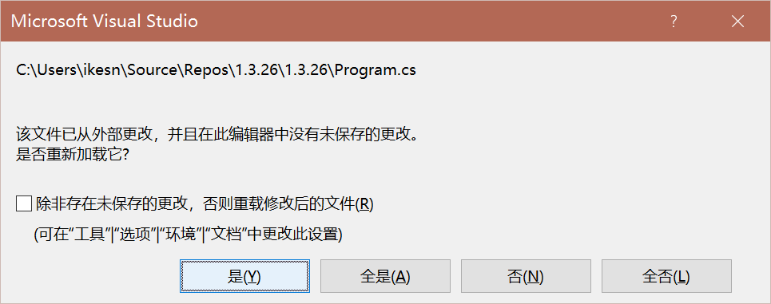
11. 此时，一些不需要依赖库的题目已经可运行，按快捷键「Ctrl」+「F5」即可运行代码，如果 Visual Studio 提示缺少指令集引用，请通过下面的步骤添加类库。
12. 定位到开头的 using 指令部分，缺失的库文件会被红线标出。
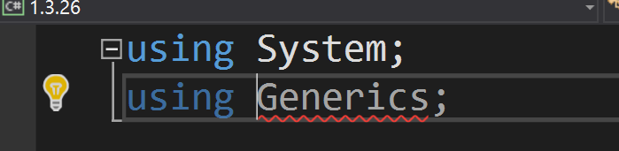
13. 右击解决方案资源管理器中的解决方案名称（一般在最上方），选择「添加」-「新建项目」。
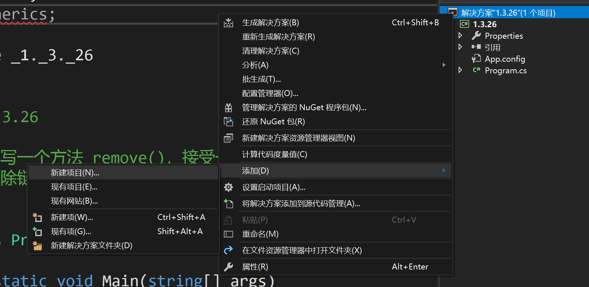
14. 在弹出的「新建项目」对话框中选择「Visual C#」-「Windows 桌面」-「类库」模板，项目名称与缺失的库名称相同。
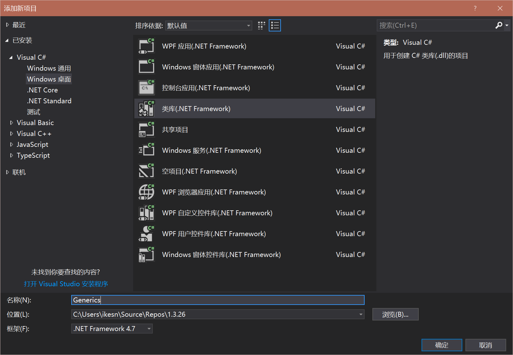
15. 接下来回到第 3 步中打开的网站，找到缺失的库，在本例中，依次点击「1-Fundamental」-「1.3」-「Generics」，利用第 5 步中的方法下载所有 .cs 文件。
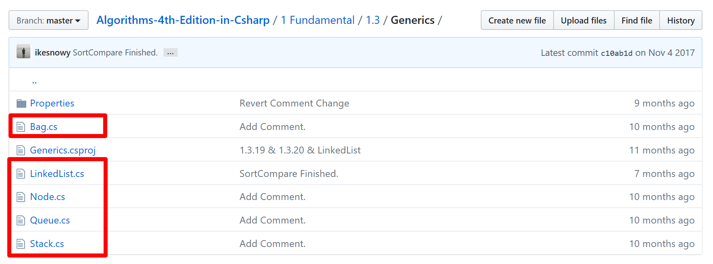
16. 回到 Visual Studio 中，在解决方案资源管理器中右键点击刚才新建的库名称（这里是 Generics），用第 10 步中的方法添加刚才下载的所有 .cs 文件。
17. 右键点击题目项目中的「引用」，选择「添加引用」。
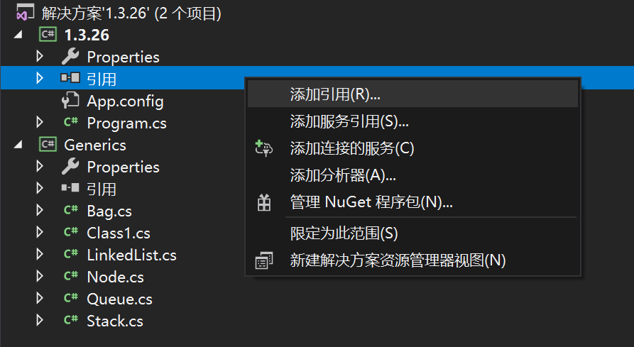
18. 在弹出的「引用管理器」对话框中，勾选刚才新建的库项目，点击「确定」。
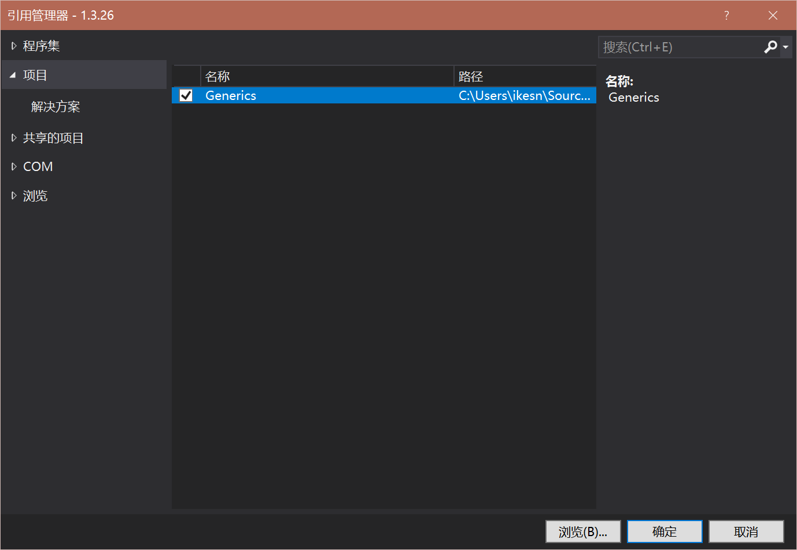
19. 现在题目应该可运行，右键题目项目，选择「设为启动项目」，然后按快捷键「Ctrl」+「F5」运行。
Windows 窗体应用程序
1. 打开 Visual Studio，选择「文件」-「新建」-「项目」，或按「Ctrl」+「Shift」+「N」打开「新建项目」对话框。
2. 在模板中选择「Visual C#」-「Windows 桌面」-「Windows 窗体应用（.NET Framework）」，输入项目名称和位置，点击「确定」。
3. 这里以题 1.1.31 为例，点击本页底部的 GitHub 图标，进入题解源代码页。
4. 依次选择文件夹「1-Fundamental」-「1.1」-「1.1.31」，找到所有后缀为 .cs 和 .resx 的文件。
5. 点击「Program.cs」，随后右键点击「Raw」，选择「目标另存为」，下载代码文件。
6. 依次对所有其他的 .cs 以及 .resx 文件做相同操作，下载全部的代码文件。
7. 在解决方案资源管理器中，右键点击项目名称（一般位于解决方案名称的下方），选择「在文件资源管理器中打开文件夹」。
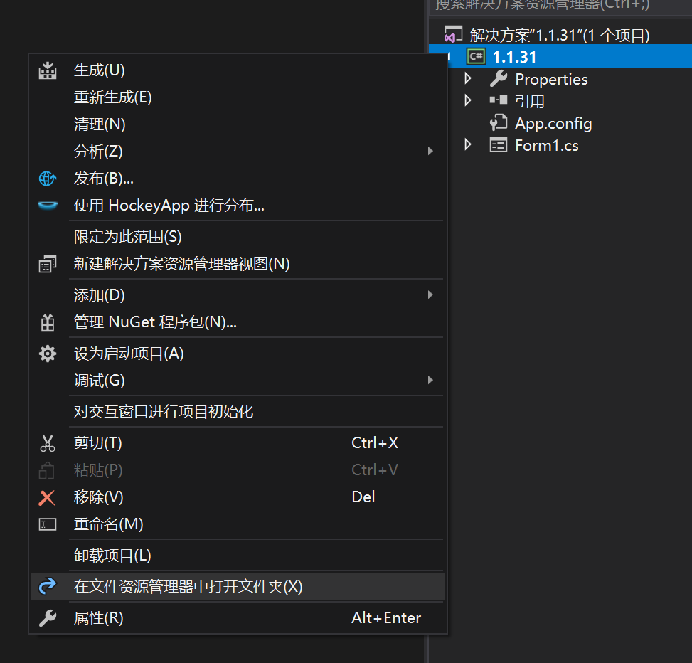
8. 将所有的代码文件复制到该目录下，如果存在重复则直接覆盖。
9. 这时 Visual Studio 可能会提示文件被更改，选择「重新加载」即可。
10. 再次右击项目名称，选择「添加」-「现有项」，或按快捷键「Shift」+「Alt」+「A」，在弹出的窗口中选择刚才复制的所有 .cs 文件（不用选择 .resx 文件，Visual Studio 会自动扫描添加）。
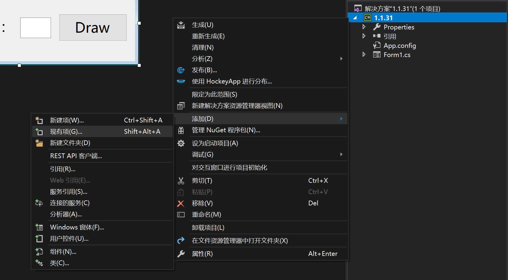
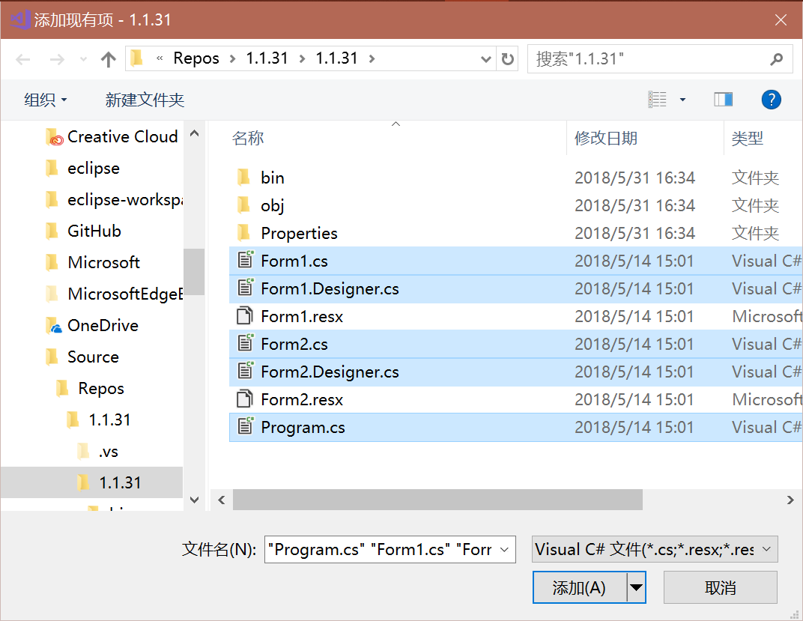
11. 此时，一些不需要依赖库的题目已经可运行，按快捷键「Ctrl」+「F5」即可运行代码，如果 Visual Studio 提示缺少指令集引用，请参阅「控制台应用程序」中的第 12 步至第 19 步。